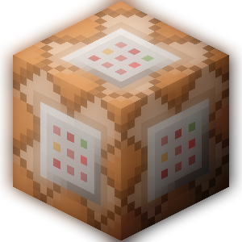

ZinX Launcher - Лаунчер для Minecraft: Windows 10 Edition, он позволяет скачивать игру, открывать ее, активировать ее и т. д. !
Итак, сейчас мы вам расскажем о кодах ошибок и о ошибках которые могут возникнуть с лаунчером.
1. Не удалось обновить лаунчер из-за ошибки ... Код ошибки лаунчера 1 :
Эта ошибка возникает при проблемах во время обновления лаунчера, они могут быть разных типов которые нам неизвестны.
При возникновении ее вам необходимо сделать скриншот этой ошибки и отправить нам на почту: zprod1001@gmail.com
Мы постараемся исправить ее, так как она может возникать из-за проблем при выходе обновления.
2. Ошибка при установке и активации MCBE :
Если установка и активация MCBE идёт больше 10 минут, то у вас возникла проблема и вам необходимо ее решить.
Она может происходить из-за неисправности Microsoft Store, когда приложения из него у вас не скачиваются.
У нас есть решение это проблемы с помощью открытия 2-ух файлов, вот ссылки на них: 1-ый файл 2-ой файл
После скачивания и открытия этих файлов, у вас должна пропасть эта проблема. И попробуйте заново скачать
MCBE с нашего лаунчера. Если же она не пропала то также отправьте об этом на нашу почту: zprod1001@gmail.com